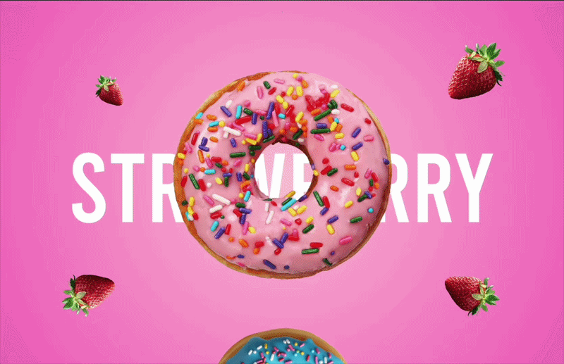

Designing the connected system behind clinical documentation, longitudinal client context, AI-assisted scheduling and clinic operations.
Hello  I’m Hadiqa
I’m Hadiqa
I design thoughtful products
that make complex systems
feel simple.
Currently designing AI-enabled healthcare products
and shipping ideas through rapid prototyping
Improving UX ☺
✦
Testing ideas
Design systems
Making it real
Rapid prototyping ↝
Reframing problems
⌁
◉
Thinking systems
Visual storytelling
Vibe coding
Painting murals
Visual art practice
Selected work
Three ways I turn complexity into something people can use.
Visual practice
The same eye, applied beyond product screens.
Selected visual communication, campaigns and art practice—work that continues to shape how I use story, colour and composition digitally.

About
Product thinking grounded in visual craft—and brought closer to reality through AI.
I’m a product designer working across discovery, user flows, high-fidelity UI, design systems, implementation support and product QA. My current work focuses on AI-enabled healthcare products, where I collaborate with clinical, technical and business stakeholders to make complex experiences feel clear and trustworthy.
Start a conversation